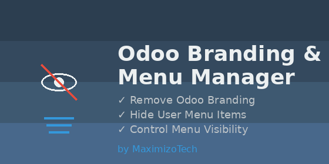

A comprehensive interface customization application professionally developed by MaximizoTech. Remove Odoo branding, streamline your user menus, and control app visibility per user!

Automatically cleans up the top-right user dropdown menu to prevent users from navigating to unnecessary external links. Effectively removes:
Gain full control over what each user sees in their Odoo instance without complex security rules:
This module is professionally developed, maintained, and authorized by MaximizoTech.
For technical support, custom feature requests, or enterprise Odoo development services, please reach out to us:
Authorized and published by MaximizoTech. All rights reserved.
Built and maintained by MaximizoTech. Portions inspired by open-source Odoo community tools.